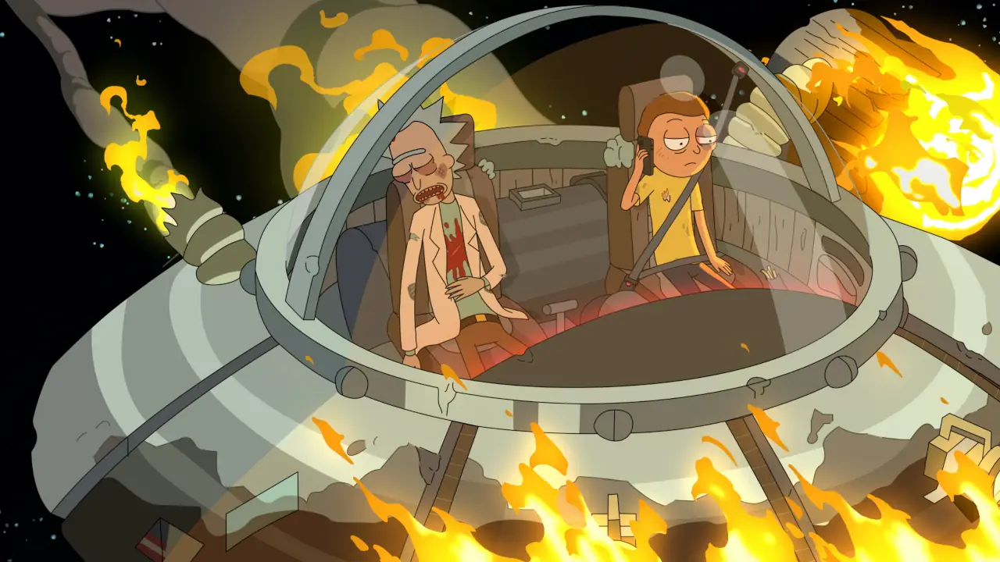
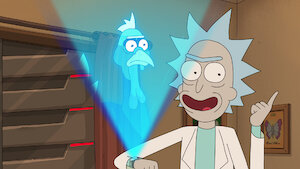
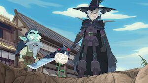

EXPLORAR TEMPORADAS
Rick organiza um jantar diplomático com um poderoso inimigo dos oceanos, enquanto Morty entra em uma dimensão onde o tempo passa de forma diferente após tentar impressionar Jessica.
Diversas versões da família Smith começam a se atacar, criando um caos de clones e realidades falsas onde ninguém sabe quem é o verdadeiro.
Morty se apaixona por uma super-heroína ambiental e descobre que salvar o planeta pode ter consequências sombrias, enquanto Rick e Summer fazem festas em mundos condenados.
Um experimento científico totalmente fora de controle gera criaturas monstruosas que colocam o planeta em risco, forçando Rick a lidar com as consequências absurdas.
Morty e Summer roubam o carro espacial de Rick para ganhar popularidade na escola, enquanto Rick e Jerry enfrentam uma estranha sociedade alienígena.

Após virar um peru gigante, Rick precisa recuperar seu corpo humano enquanto foge do governo dos Estados Unidos em meio ao caos do Dia de Ação de Graças.
Rick desenvolve um vício por robôs gigantes combináveis, transformando a família em uma equipe estilo anime enquanto o poder começa a subir à cabeça.
Rick entra na mente de um velho amigo para salvá-lo, enfrentando memórias dolorosas e revelando partes inesperadas do seu passado emocional.
Rick vive aventuras com dois corvos inteligentes enquanto Morty tenta provar que consegue sobreviver sozinho sem depender do avô.

Morty descobre segredos profundos da Cidadela dos Ricks, revelando a verdadeira origem do universo central finito e mudando o rumo da série para sempre.